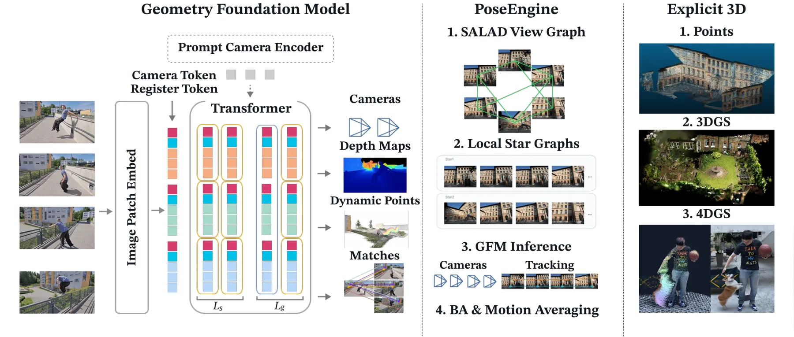
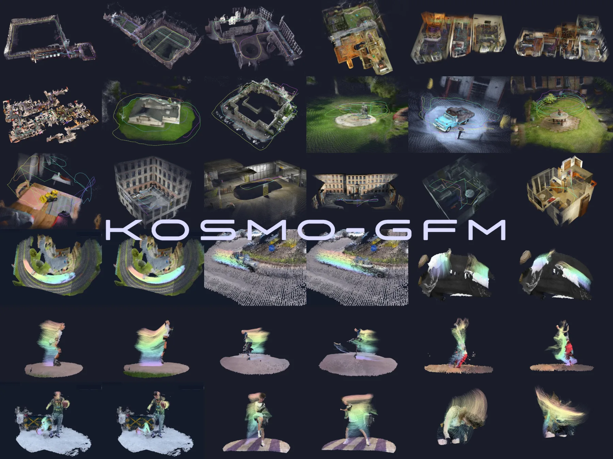
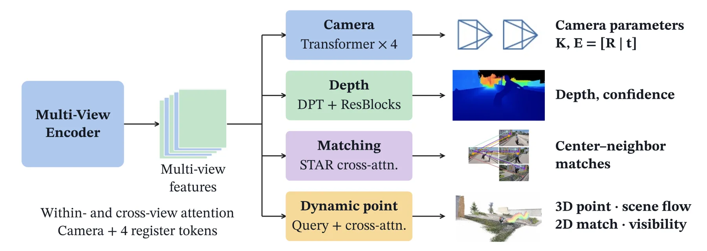
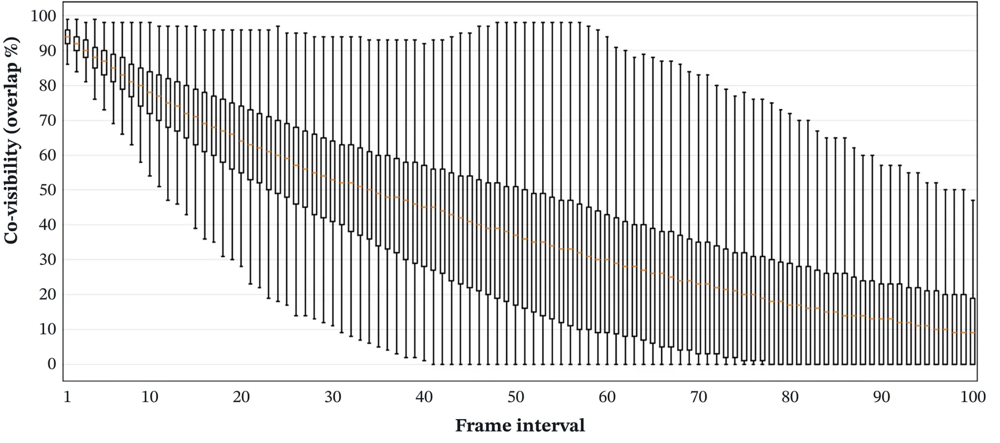
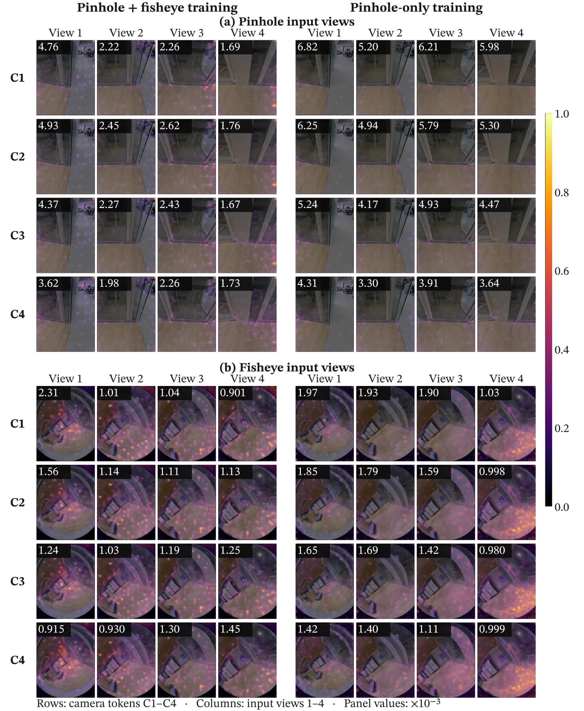
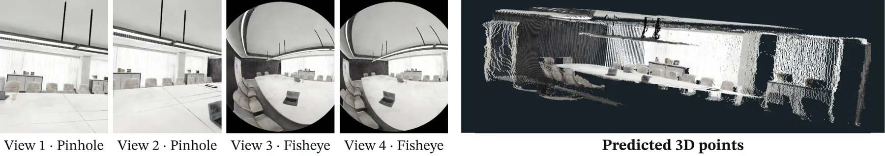

Kosmo-GFM：面向生产部署的几何基础模型
Kosmo-GFM: A Production-Ready Geometry Foundation Model
这篇是“几何基础模型 + 位姿优化引擎 + 合成/重建数据闭环”的完整系统论文：GFM 提供相机、深度、匹配与动态点四类先验，PoseEngine 用 STAR 组织跨视图约束把先验接成场景级相机，KosmoWorld 用真实重建生成训练监督。它最有信息量的地方不是单点模型更强，而是把“先验越强、后端越简”的工程主张做成了可测的运行时对比（14.07 h vs 69.67 h）。同时它也如实报告了下游 3DGS 渲染并没有超过 GLUEMAP，以及无纹理、竖屏、非结构化照片集三类失效场景。
AbsRel on SpatialBench Sparse
Pose AUC@5 on 34 scenes
Cumulative runtime
作者、单位与技术谱系 · Research context
作者与单位
研究脉络
- Depth Anything 3（DA3）方法基座关系：GFM 的编码器设计直接沿用 DA3：视图内注意力 + 跨视图注意力，相机 token 与 register token 的组织方式相同，只是把第一个 register token 换成相机提示 token。[论文 §3.1、§3.1.5]
- GLUEMAP上游基线关系：PoseEngine 的 STAR 构建（SALAD 检索 + Doppelgangers++ 验证、26 图为中心加邻居）继承自 GLUEMAP，并在同一批场景上作为主要运行时对照。[论文 §3.2、Table 10]
- 本篇推进：GFM + PoseEngine + KosmoWorld 三件套本篇推进关系：在 DA3/GLUEMAP 的基础上把“模型—后端—数据”合成一个闭环，并给出缩放实验与生产级运行时。[论文 §1、§5]
合作网络
- Kosmo Research ↔ UniQuery4R / MVLoMa / GeoWeaverKosmo Research（Sheng Tang、Wenhua Jin、Tiancheng Chen 等） → UniQuery4R、MVLoMa、GeoWeaver 作者组关系：共同署名[论文参考文献 [Chen 2026c]、[Lu 2026b]、[Jiang 2026a]]
- Kosmo-GFM ↔ KosmoWorld / HY-World 2.0Kosmo-GFM → HY-World 2.0 的 WorldNav 轨迹规划模块关系：技术依赖[论文 §3.3.1 与参考文献 [Team HY-World, 2026]]
以上“共同署名”“技术依赖”均来自论文署名、参考文献与正文引用；论文未披露实验室隶属或导师关系，此处不做推断。
方法本质拆解 · What actually changed
是不是微调？
GFM 是从头训练的大模型（ViT-Giant、1655.29M 参数），不是对现成 VGGT/DA3 做轻量微调；相机条件版本是在 RGB-only 版本上继续训练得到（1769.82M/1788.74M 参数）。匹配解码器的监督只训练跨视图注意力与分配层，特征编码器保持冻结；PoseEngine 侧没有可训练权重，是纯优化加检索。KosmoWorld 只是额外训练数据，不改变这套“预训练 + 优化后端”的分工。
有没有额外约束？
约束分三类。尺度约束：全局几何尺度、pose scale、逐帧几何尺度与 3DGS 尺度各有一套定义，深度/3D 点/平移按对应尺度归一，避免跨场景数值范围失控。坐标约束：以首帧相机系为世界系，外参按 world-to-camera 约定预测，所有点都在该参考系里表达。训练约束：相机损失在四轮迭代上按权重累加、深度残差按参考深度归一化、匹配负样本必须违反本质矩阵几何一致性，另加 FoV 监督与置信度回归。
推理/后端到底做了什么？
推理分两段：GFM 一次前向在 STAR（26 图）内同时给出先验与匹配，PoseEngine 再把这些约束送进优化恢复场景相机；没有传统因子图或全局 BA 的分层调度，但也不是纯前馈——优化仍在，只是轮数被先验质量压下来。PoseEngine Flash 在此之上加 FP8/FP16 混合精度与系统级流水优化，让大场景重建能落到 2.62 h。下游 3DGS/4DGS 拟合时允许相机与高斯联合优化，用来吸收快速重建留下的位姿误差。
方法本质是什么？
本质是“把不确定性从后端优化前移到学习的先验里”：GFM 用大规模数据把相机/深度/匹配的误差压小，PoseEngine 只做局部一致性整合，于是总计算量下降而精度上升。它没有做的是全局一致的因子图优化，也没有保证下游渲染质量——渲染仍由 LiteGS 之类的外部实现决定。换句话说，它改变的是初始化与约束质量，而不是重写 SLAM 后端。
输入多视图 RGB（可选相机参数）+ KosmoWorld 重建监督，改变的是先验预测精度与尺度约定，动作是 STAR 内单次前向给出匹配并做轻量位姿优化，直接效果是位姿 AUC 上升且累计耗时降到 GLUEMAP 的约 20%。

结论与问题Conclusion & Motivation
核心结论
Kosmo-GFM 的核心主张是“学习先验与几何优化互补，而不是互相替代”：GFM 给出相机、深度、跨视图匹配与动态点，PoseEngine 只负责把这些先验接成场景一致的相机与几何，因此先验越准，后端需要的 BA 轮数越少、系统越快。证据上，SpatialBench Sparse 的 AbsRel 做到 0.063（VGGT-Ω 0.077、π³-X 0.084），Medium 0.059，并在 34 个共同场景上把位姿 AUC@5° 做到 94.26（GLUEMAP 90.66、COLMAP 89.28），累计耗时 14.07 h 对 69.67 h。但同一套相机喂给下游 3DGS 时，MipNeRF360 上 PSNR 26.69 反而低于 GLUEMAP 初始化的 28.40 与参考位姿 28.19，说明“位姿指标更好”不自动等于“渲染更好”。
动机与问题
传统 SfM 依赖可靠特征匹配与足够重叠，无纹理、重复结构、大基线和动态场景都会破坏对应关系；视图一多，维持场景一致性的计算成本也线性上升。几何基础模型通过大规模预训练获得了可迁移的空间先验，但它的预测本身不满足整场景的跨视图与时序一致性，尤其在长序列、大场景与动态观测下。作者因此不去追求“端到端取代优化”，而是把问题重述为：如何用更好的先验去减少可靠重建所需的优化量。
方法Method
方法总览
系统分三层。GFM 用共享多视图特征加四个任务解码器，分别出相机（平移、四元数旋转、水平/垂直视场角，四轮迭代细化）、深度（DPT 式由粗到细，带置信度）、跨视图匹配（MVLoMa 的 STAR 组织，一个中心视图对多个邻居）与动态点（UniQuery4R 的 (u,v,s,t) 查询，可复用一次编码的片段特征）。PoseEngine 以 26 张图的 STAR 为单位组织观测，无序集合用 SALAD 检索加 Doppelgangers++ 验证，有序序列用时间相邻帧加少量检索帧，单次 GFM 前向同时给出几何先验与对应关系。KosmoWorld 把真实场景重建切成可用区域，规划轨迹并渲染 RGB 与深度，作为 GFM 的额外监督。
关键技术细节
骨干是 ViT-Giant、14×14 patch，取第 19/27/33/39 块特征拼成 3072 维表示；模型规模 1655.29M 参数。尺度处理是这篇最容易被忽略的细节：RGB-only 用首帧相机中心到所有有效点的平均距离做全局尺度；相机条件模式用最大相机中心距离做 pose scale，并提供“直接归一化”和“解耦的 pose 尺度 + 逐帧几何尺度（预测比值 r_i=s_i/s_pose）”两种方案，后者把深度目标放回更合适的数值范围。3DGS 解码器另按 95 分位半径缩放到固定 2.0 的统一尺度。训练损失分工明确：相机用四轮迭代的 L1 位姿与 FoV 误差并按轮次衰减加权；深度用按参考深度归一化的几何残差加置信度回归；匹配用 dual-softmax 分配、可匹配性与由本质矩阵几何校验得到的负样本。

实验Experiments
实验设置
静态几何在 SpatialBench 的 Sparse 与 Medium 两个子集上评测，指标为 AbsRel/SqRel/RMSE、δ1.03/1.05/1.10 与 RAcc/TAcc/AUC，对照包括 VGGT、Fast3R、FastVGGT、MUSt3R、MapAnything、OmniVGGT、π³、π³-X、AMB3R、DA3 系列、WorldMirror、VGGT-Ω。动态几何用 Panoptic Studio、PointOdyssey、Dynamic Replica、Aria Digital Twin、SynthVerse 五个数据集，指标为动态点 APD、场景流准确率与 3D 端点误差（米），对照含 UniQuery4R、SpaTrackerV2、St4RTrack、TraceAnything、Any4D、V-DPM、4RC、OpenD4RT、ARROW。场景级重建在 ETH3D 15 个、MipNeRF360 9 个、Tanks & Temples 6 个、SMERF 4 个共 34 个共同场景、11,336 张图上对比 COLMAP、GLUEMAP、VidMap、PoseEngine 与 PoseEngine Flash。
实验数字与比较
静态指标：Sparse 上 AbsRel 0.063、AUC@5° 0.573、AUC@30° 0.823，Medium 上 AbsRel 0.059、AUC@5° 0.582、ATE 0.508，均优于 VGGT-Ω（Sparse 0.077 / 0.504 / 0.803）与 π³-X（0.084 / 0.427 / 0.741）。动态指标：五点平均动态点 APD 76.4、点 EPE 0.342 m，场景流准确率 71.1%、流 EPE 0.188 m，点 EPE 与流 EPE 都是十种方法里最低（ARROW 为 0.551 / 0.291，UniQuery4R 为 0.610 / 0.351）。场景级：PoseEngine 的 AUC@1/3/5° 为 78.45/91.28/94.26，FocalAbsRel 0.00158，ATE nRMSE 0.02640，11,336 张图全部注册，累计 14.07 h；GLUEMAP 为 69.13/86.18/90.66、0.00230、0.03176、69.67 h；PoseEngine Flash 为 62.50/83.64/89.28、0.00316、0.02823、2.62 h。
消融/失败边界
数据消融（Table 1）显示 KosmoWorld 是实打实的增益：Sparse 上去掉它 AbsRel 从 0.0630 退到 0.0854、AUC@5° 从 0.5726 退到 0.5422；Medium 上 AbsRel 0.0594 对 0.0740、AUC@5° 0.5820 对 0.5374。匹配消融显示用共享特征的 MVLoMa 替换 LoMa Large，在 48 个场景上 AUC@1 从 72.12 提到 75.40（无序 STAR）、68.88 提到 73.48（有序 STAR）。失败边界有三处：相机条件模式把位姿 AUC 推到 0.996+，但深度 AbsRel 从 0.063 退化到 0.082（加逐帧尺度后 0.067），说明“给真值位姿”会把精度从几何转移到位姿输入；下游 3DGS 上 PoseEngine 初始化 PSNR 26.69 低于 GLUEMAP 28.40，说明位姿 AUC 提升没有转化为渲染收益；3.2B→4.8B 递归深度只把 AbsRel 从 0.2067 降到 0.2049，边际收益明显递减。
局限与迁移Limitations & Transfer
局限与待核验
作者明确承认的限制包括：无纹理大平面（楼梯间例子）导致相机恢复不可靠；训练以横向图像/视频为主，竖屏输入明显变差；训练偏重 walkthrough 轨迹，对互联网照片这类非结构化集合（MegaDepth、ArchWorld）鲁棒性不足；动态训练占比高使静态场景欠表示，跨视图尺度一致性受影响；目标帧被遮挡时 3D 轨迹出现时序抖动。我们的待核验项：PoseEngine 的 14.07 h 是在什么 CPU/GPU 配置、是否含模型加载与编译，正文只给了十二线程与 Flash 的 FP8/FP16 口径；Table 10 的 34 场景是 VidMap 失败后筛出的子集，换到更难的 ETH3D 场景（被排除的 10 个）结论是否保持未知；KosmoWorld 数据本身是否公开、能否复现其数据消融，原文未说明。
与你研究路线的关系
可直接迁移的是“先验—后端分层”这一接口设计：GFM 只负责预测，PoseEngine 用 STAR + 单次前向做匹配，把优化预算显式压到与先验质量挂钩，这正好对应我们做可靠状态估计时“哪些量交给学习、哪些量留给优化”的划分问题。第二个可迁移模块是尺度约定：全局尺度、pose scale、逐帧几何尺度三套口径分开定义，并用比值分支做桥接，这套写法可以直接搬到我们自己的多批/多段重建里，避免把尺度误差塞进深度残差。下一步实验建议：在同一个后端（例如我们现有的 GLUEMAP 风格 BA）上只替换先验来源（DA3-Giant / VGGT-Ω / Kosmo-GFM），固定 STAR 与迭代次数，测“先验变强后 BA 轮数可减少多少”；并把 3DGS 渲染指标作为独立验收项，而不是用位姿 AUC 代替。







